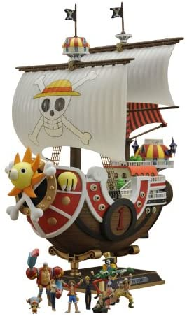

Sunny New World

Bandai Hobby Version Vehicle Thousand Sunny New World Ver. Model Kit Figura 30 CM One Piece HI-End Ships, Talla única (BDHOP716279)
¡Bienvenido a Nuestra Tripulación Nakama! Si eres como nosotros y te apasionan las aventuras de los Mugiwara en busca del One Piece. ¡Esta es Tu WEB! Aquí encontrarás las Figuras de One Piece Originales más deseadas por los Coleccionistas. ¡Embárcate con nosotros en el Thousand Sunny!
Bandai Hobby Version Vehicle Thousand Sunny New World Ver. Model Kit Figura 30 CM One Piece HI-End Ships, Talla única (BDHOP716279)